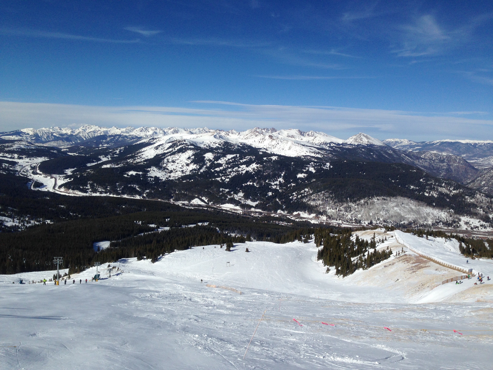
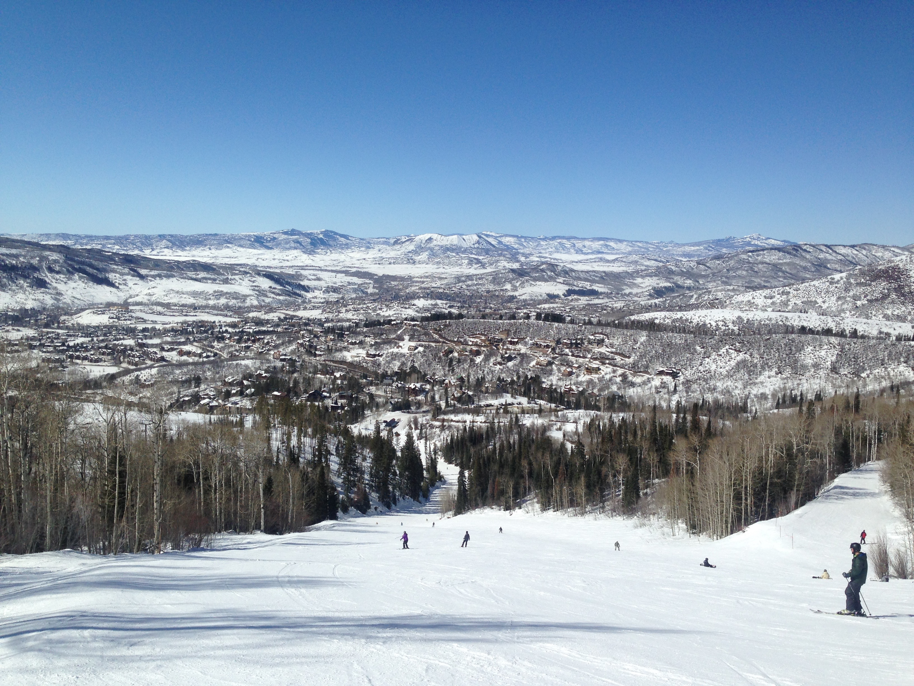
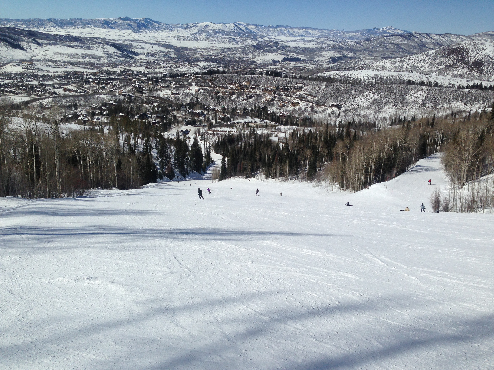
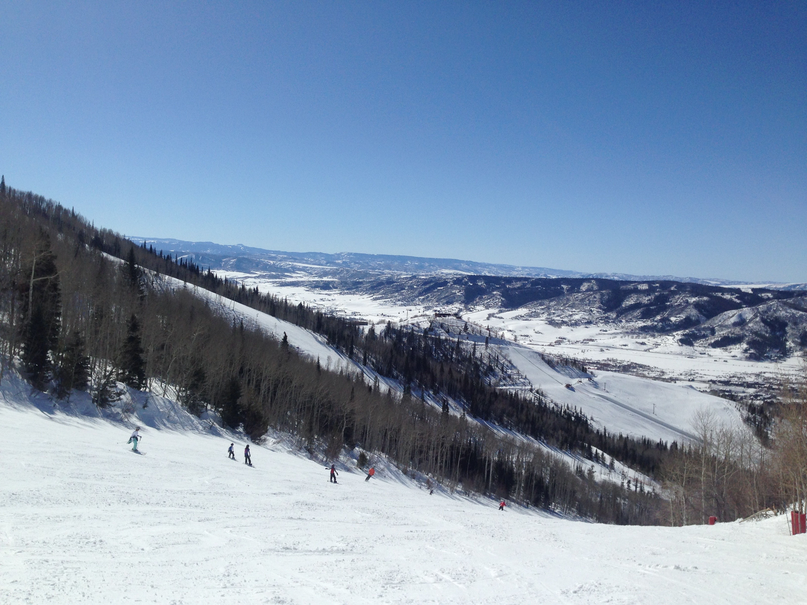

Half Dome is a granite dome in Yosemite National Park, located in northeastern Mariposa County, California, at the eastern end of Yosemite valley. The granite crest rises more than 4,773 ft above the valley floor.
This particular view is of Half Dome as seen from Washburn Point.
More Spectaular Yosemite Views
El Capitan is a 3,000 foot vertical rock formation in Yosemite National Park, located on the north side of Yosemite Valley, near its western end. The granite monolith is one of the world's favorite challenges for rock climbers. The formation was named "El Capitan" by the Mariposa Battalion when it explored the valley in 1851. is a 3,000 foot vertical rock formation in Yosemite National Park, located on the north side of Yosemite Valley, near its western end. The granite monolith is one of the world's favorite challenges for rock climbers. The formation was named "El Capitan" by the Mariposa Battalion when it explored the valley in 1851. is a 3,000 foot vertical rock formation in Yosemite National Park, located on the north side of Yosemite Valley, near its western end. The granite monolith is one of the world's favorite challenges for rock climbers. The formation was named "El Capitan" by the Mariposa Battalion when it explored the valley in 1851.
Tunnel View is a 3,000 foot vertical rock formation in Yosemite National Park, located on the north side of Yosemite Valley, near its western end. The granite monolith is one of the world's favorite challenges for rock climbers. The formation was named "El Capitan" by the Mariposa Battalion when it explored the valley in 1851. is a 3,000 foot vertical rock formation in Yosemite National Park, located on the north side of Yosemite Valley, near its western end. The granite monolith is one of the world's favorite challenges for rock climbers. The formation was named "El Capitan" by the Mariposa Battalion when it explored the valley in 1851. is a 3,000 foot vertical rock formation in Yosemite National Park, located on the north side of Yosemite Valley, near its western end. The granite monolith is one of the world's favorite challenges for rock climbers. The formation was named "El Capitan" by the Mariposa Battalion when it explored the valley in 1851.
Small But Mighty Yosemite
El Capitan is a 3,000 foot vertical rock formation in Yosemite National Park.
Tunnel View looks east into Yosemite Valley.
 Upper Yosemite Falls are 1,430 ft and are amonth the twenty highest waterfalls in the world.
Upper Yosemite Falls are 1,430 ft and are amonth the twenty highest waterfalls in the world.
Hanging Rock, off Glacier Point, used to be a popular spot for people, well, hang from. Crazy people.
More Spectacular Yosemite Views
El Capitan is a 3,000 foot vertical rock formation in Yosemite National Park, located on the north side of Yosemite Valley, near its western end. The granite monolith is one of th eworld's favorite challenges for rock climbers. The formation was named "El Capitan" by the Mariposa Battalion when it explored the valley in 1851.

click image to enlarge
Tunnel Viewis a 3,000 foot vertical rock formation in Yosemite National Park, located on the north side of Yosemite Valley, near its western end. The granite monolith is one of the world's favorite challenges for rock climbers.
I don't know why these aren't lining up right. The pictures should be on two different lines. Same thing in one of the above pieces.